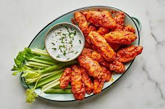

Boneless

Description
The pizza is one of the weirdest dishes around the world
Ingredients
- Unbleached all-purpose flour
- Oil
- Garlic powder
- Paprika
- Eggs
- Milk
Steps
- Combine flour, salt, black pepper, cayenne pepper, paprika, and garlic powder in a large bowl.
Whisk together egg and milk in a small bowl
- Dip each piece of chicken in egg mixture, then roll in flour mixture.
Repeat so that each piece of chicken is double-coated. Refrigerate breaded chicken for 20 minutes
- Fry chicken in hot oil in batches. Cook until golden brown and juices run clear, 5 to 6 minutes.
An instant-read thermometer inserted into the center should read at least 165 degrees F (74 degrees C)
- Combine hot sauce and butter in a microwave-safe bowl.
Heat sauce in the microwave until melted, 20 to 30 seconds. Pour sauce over fried chicken; mix to coat